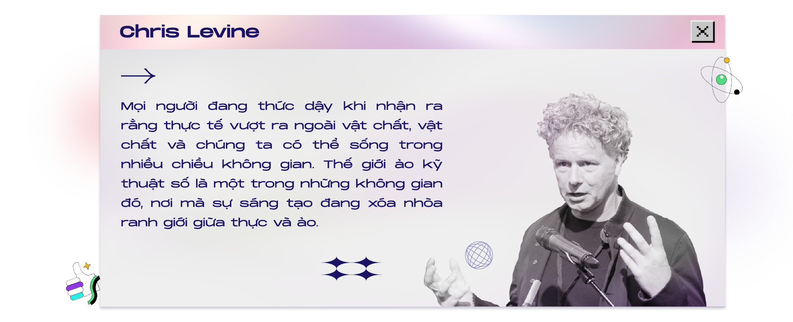

Minh chứng cho hiện tượng này, nhà thời trang kỹ thuật số The Fabricant
đã bán một món đồ thời trang cao cấp kỹ thuật số được thiết kế để “diện”
lên chủ nhân của nó bằng cách sử dụng các phần mềm chỉnh sửa ảnh cho phù
hợp với ảnh của họ với giá "trên trời".
Kể từ đó, các thương hiệu như Tribute, Dress X và Replicant. Fashion
cũng đã bắt đầu có những bước tiến triển mới, cung cấp các sản phẩm “ảo”
với giá rẻ hơn, mẫu mã độc đáo hơn theo những cách thức tương tự.
Vậy làm thế nào để tôi sở hữu được nó?
Tôi đã chán bị “đụng hàng”
Ngày nay, đa số mọi người đều để ý tới nhu cầu ăn mặc của bản thân và
nắm bắt xu hướng cực kỳ nhanh. Bởi vì lẽ đó, câu hỏi đặt ra “Phải chăng
mọi người đang ăn mặc quá giống nhau? Dường như chúng ta không còn phong
cách của riêng bản thân nữa”. Mỗi bộ trang phục “diện” trên người bạn
phải phù hợp với bạn, phản ánh được phong cách của riêng mình bạn chứ
không phải giống hay học theo bất kỳ ai. Nhưng tôi lại không nhận thấy
được điều đó trên các trang web mua sắm vì họ đang bán những món đồ
tương tự nhau.
Cuộc sống ngày càng phát triển, nhu cầu và tiêu chí chọn lọc của người
tiêu dùng ngày càng khắt khe. Họ không đơn giản chỉ muốn một bộ trang
phục đẹp, họ còn muốn mình trở nên thật nổi bật và khác biệt. Mỗi bộ
trang phục diện trên người phải là sự đột phá, hoàn toàn mới mẻ. Tất
nhiên vì lẽ đó, khái niệm “đụng hàng” dần ảnh hưởng trực tiếp tới cảm
xúc của họ. Mọi người sẽ rất vui vẻ, hạnh phúc khi được diện một bộ đồ
mới lên người, nhưng cũng chính cảm xúc vui vẻ, hạnh phúc đó có thể tiêu
tan bất cứ lúc nào nếu vô tình họ thấy cũng bộ trang phục đó lại được
diện trên một người khác.
Quần áo kỹ thuật số thân thiện với môi trường.
Thông qua việc sử dụng các công nghệ kỹ thuật số, thời trang có thể tác
động tích cực đến hệ sinh thái của hành tinh chúng ta. Sản xuất quần áo
kỹ thuật số sẽ không có những thứ như nhà máy, chuỗi cung ứng, của hàng
bán lẻ hay quy mô mẫu. Không có xe tải vận chuyển nhiên liệu, không có
quần áo để giặt và cũng không có tủ đựng quần áo cho người
Theo tài liệu nghiên cứu của The Fabricant Foreword The Fabricant is
dedicated to provoking the physical fashion industry to revolutionise
its thinking and its current s, so sánh vòng đời của thời trang thực
so với sản xuất trên nền tảng kỹ thuật số, sử dụng việc tạo ra chiếc
áo thun làm ví dụ hoạt động của nó.
Giải pháp hữu hiệu cho những tín đồ “nghiện” mua sắm
Đối với nhiều người, quần áo mang lại cảm giác vui vẻ thuần khiết và
phục vụ cho mục đích thực tế: che phủ (bảo vệ thôi:) cơ thể khỏi các
điều kiện của Mẹ thiên nhiên, phản ánh địa vị xã hội và giúp chúng ta
thể hiện bản thân. Nhưng hiện nay, ngoài những chức năng tôi vừa nhắc
tới, thời trang còn giúp các kols tăng thêm followers, điều này gây ra
“thảm họa” cho chính hành tinh của chúng ta. Giải pháp nằm ngay ở đây:
thời trang kỹ thuật số. Nó làm thỏa mãn nhu cầu mua sắm của con người,
nhưng cũng không quên trách nhiệm bảo vệ hành tinh này. Người dùng có
thể thỏa thích sắm cho mình những mẫu thiết kế mới nhất, lạ nhất nhưng
không còn lo lắng tới việc cất dọn đồ, xử lý đồ không còn mặc hay bất
cứ công đoạn cồng kềnh nào.

Các cuộc cách mạng sẽ không thể xảy ra vì một thực thể đơn lẻ mà bởi
nhiều cá nhân cam kết vì một mục đích duy nhất. Đối với ngành thời
trang, chính niềm đam mê, khát khao về một tương lai sáng tạo dân chủ và
đổi mới, nơi ranh giới giữa thời trang và công nghệ hòa chung làm một là
dấu mốc mà họ luôn hướng tới. Vũ trụ thời trang chỉ dành cho kỹ thuật số
sẽ tạo ra cánh cửa rộng mở cho các hình thức thể hiện bản thân mới, nơi
không áp dụng những quy tắc ràng buộc tồn tại từ trước.

Vẻ đẹp của thời trang kỹ thuật số là khi nó được tiến hành liên tục, nơi
chúng ta có thể dễ dàng chọn ra những ý tưởng phù hợp với mình và bỏ qua
những ý tưởng không phù hợp.
Nền tảng sáng tạo thời trang kỹ thuật số chính là chìa khóa để mở ra một
tủ quần áo thời trang mới vô tận. Đây chính là cuộc gọi trong tương lai
của bạn, hãy chắc chắn rằng bạn sẽ nhấc máy và nhận cuộc gọi này.